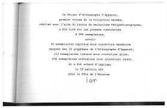

Traducteur en orthographe d’Apparat - PERSONNEL

L’orthographe d’apparat est un projet de complexification de l’orthographe française volontairement peu intelligible créé en 1977 par le collège de Pataphysique. Cette orthographe est une satire de la langue française, souvent difficile à comparer à d’autres langues comme le Turc ou l’Allemand, qui s’écrivent comme elles se prononcent. J’ai donc créé un algorithme qui permet la traduction en orthographe d’apparat, avec une alerte concernant les particularités phonétiques. Ce projet personnel a été réalisé en moins d’un mois, sans contraintes de temps ou techniques particulières. J’ai travaillé seul pour concevoir, développer et tester cet outil. Pour concevoir cet algorithme, j’ai utilisé des approches méthodiques afin de garantir une traduction fidèle tout en tenant compte des particularités complexes de cette orthographe. Des exemples concrets de traduction sont disponibles pour illustrer les résultats obtenus. Ce projet m’a permis de développer des compétences variées, notamment dans la conception d’architectures adaptées, la formalisation des besoins utilisateurs, et la résolution de problèmes liés aux données textuelles.